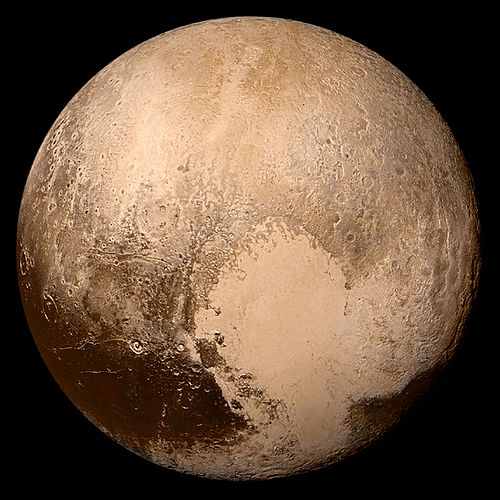
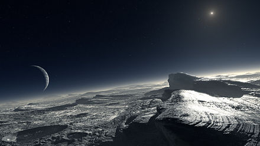
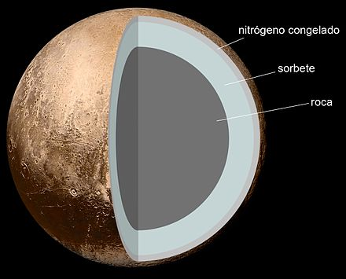

Plutón (planeta enano)
Plutón o (134340) Pluto es un planeta enano del sistema solar situado a continuación de la órbita de Neptuno. Su nombre se debe al dios mitológico romano Plutón (Hades según los griegos). En la Asamblea General de la Unión Astronómica Internacional (UAI) celebrada en Praga el 24 de agosto de 2006 se creó una nueva categoría llamada plutoide, en la que se incluye a Plutón. Es también el prototipo de una categoría de objetos transneptunianos denominada plutinos. Posee una órbita excéntrica y altamente inclinada con respecto a la eclíptica, que recorre acercándose en su perihelio hasta el interior de la órbita de Neptuno. Plutón posee cinco satélites: Caronte, Nix, Hidra, Cerbero y Estigia.3 4 Estos son cuerpos celestes que comparten la misma categoría.
Su gran distancia al Sol y a la Tierra, unida a su reducido tamaño, impide que brille por encima de la magnitud 13,8 en sus mejores momentos (perihelio orbital y oposición), por lo cual solo puede ser apreciado con telescopios a partir de los 200 mm de abertura, fotográficamente o con cámara CCD. Incluso en sus mejores momentos aparece como astro puntual de aspecto estelar, amarillento, sin rasgos distintivos (diámetro aparente inferior a 0,1 segundos de arco). No fue hasta el año 2015 cuando la sonda espacial New Horizons pasó sobre el planeta y permitió apreciar por primera vez de forma nítida el aspecto real del planeta.
Características del planeta
Rotación
El periodo de rotación de Plutón es igual a 6,39 días terrestres.67 Al igual que Urano, Plutón gira acostado sobre un lado en su plano orbital, con una inclinación axial de 120°. Por lo tanto, la variación estacional es extrema. Durante los solsticios plutonianos, en una cuarta parte de la superficie es continuamente de día mientras que en otra cuarta parte es noche continua.
Plutón recibe una cantidad de luz solar análoga a la que recibe la Tierra por las tardes. La NASA tiene publicado un calculador del tiempo plutoniano que determina cuando la luz en la Tierra es equivalente a la de Plutón en un día claro.
Características físicas
- Masa 1,25 × 1022 kg1
- Densidad 1750 kg/m³
- Área de superficie 17 000 000 km²
- Diámetro 2370 km1
- Gravedad 0,6 m/s²1
- Velocidad de escape 1100 m/s1 2
- Periodo de rotación 153 horas1
- Inclinación axial 122,5°1
- Albedo 0,3
Composición de su atmósfera
Atmósfera
Evocación artística de la vista desde la superficie de Plutón hacia su firmamento. Aparecen Caronte a la izquierda de la imagen, mientras que el Sol aparece arriba a la derecha como un punto brillante en el cielo que ilumina la superficie. La luminosidad del Sol es mil veces menor que en la Tierra. Plutón posee una atmósfera extremadamente tenue, formada por nitrógeno, metano y monóxido de carbono, que se congela y colapsa sobre su superficie a medida que el planeta se aleja del Sol. Es esta evaporación y posterior congelamiento lo que causó las variaciones en el albedo del planeta, detectadas por medio de fotómetros fotoeléctricos en la década de 1950 (Kuiper y otros). A medida que el planeta se aproximó, los cambios se fueron haciendo menores, disminuyendo cuando se encontró en el perihelio orbital (1989). Se espera que estos cambios de albedo se repitan, pero a la inversa, a medida que el planeta se aleje del Sol rumbo a su afelio.
Generalmente, se podría decir que la función de su atmósfera sería proteger la superficie, pero en este caso la atmósfera de Plutón solo le sirve para evitar impactos de pequeños meteoros.
Satélites
Al principio se consideró que Plutón no poseía satélites (caso similar a Mercurio y Venus). En 1978 fue cuando se descubrió su primer satélite (Caronte), pasándose a ser considerado el sistema Plutón-Caronte como un planeta doble, cuyo centro de masas se encuentra en el exterior del disco de Plutón.
- Caronte
- Nix e Hidra
- Cerbero y Estigia
Explicación de su estructura interna.
La densidad de Plutón es 1.87g/cm3.22 Debido a la desintegración de elementos radiactivos eventualmente por calor de los hielos es suficiente para que la roca se separe de ellos, los científicos creen que Plutón contiene una estructura interna diferenciada, con el material rocoso de haber asentado en un denso núcleo rodeado por un manto de hielo de agua.
El diámetro del núcleo es la hipótesis de aproximadamente de 1700 km, el 70% del diámetro de Plutón.21 es posible que el calentamiento que continúa hoy en día, la creación de una subsuperficie de un océano de agua líquida algunos 100 to 180 km de espesor en la frontera del núcleo–manto.21 23 24 El DLR Instituto de Planetario de Investigación calcula que de la densidad del radio de Plutón en relación se encuentra en una zona de transición, junto con la luna Tritón de Neptuno, entre los helados satélites como de tamaño medios de los satélites de Urano y los satélites de Saturno, y de los rocosos satélites como Ío de Júpiter.
Planetas
Los ocho planetas que componen el sistema solar son, de menor a mayor distancia respecto al Sol, los siguientes:
| Planeta | Posicion |
|---|---|
| Mercurio | 1 |
| Venus | 2 |
| Tierra | 3 |
| Marte | 4 |
| Júpiter | 5 |
| Saturno | 6 |
| Urano | 7 |
| Neptuno | 8 |